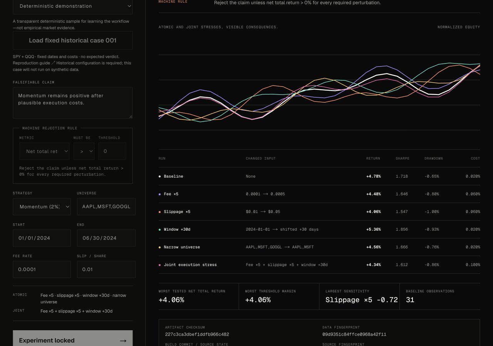
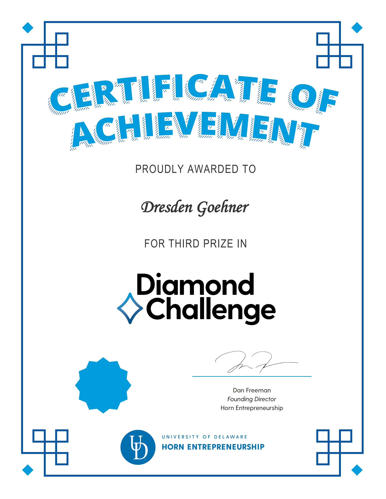
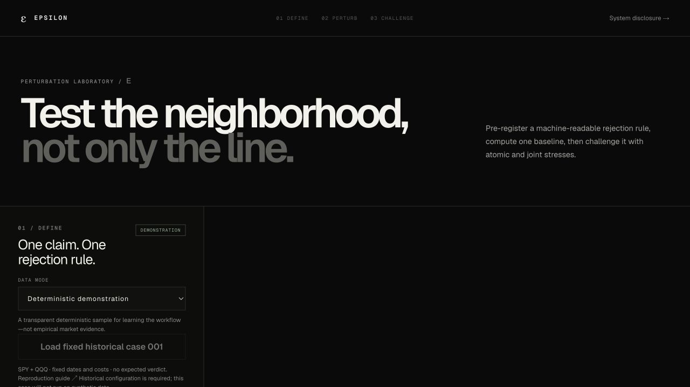
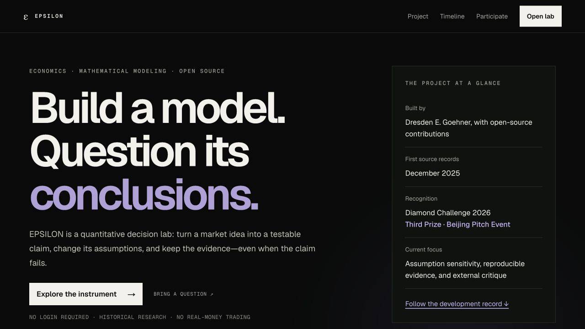

The problem
Which assumption breaks first
A convincing return curve depends on commission, slippage, the chosen window and the chosen metric. EPSILON does not ask “how much did this strategy make?” It asks which single assumption, changed, makes the conclusion fall over — and it keeps the answer on record either way.
What I built
An evidence instrument, not a demo curve
- The current product is a no-login evidence instrument: lock the claim and the evaluation rules first, then run 1 baseline and 5 perturbations, and export a verifiable evidence package.
- The project evolved from a December 2025 Python desktop simulator, through a Next.js / FastAPI generation, to the current instrument. The early code is still in the same repository; it is not the current product.
- The stock photographs in the repository (Pexels / Unsplash) are library images, not product images, and are not used on this page.
Evidence
What can be checked
- Case 001: baseline −7.75%. Maintainer observation dated 2026-09-13. Source: docs/REFERENCE_CASE.md.
- Diamond Challenge 2026, Beijing Pitch Event: Third Prize. Source: docs/RECOGNITION.md; the certificate is reproduced below in its original colour.
- awesome-quant listing: EPSILON is listed in the awesome-quant directory (wilsonfreitas/awesome-quant#735, merged 2026-10-19).
- Live lab: epsilonfield.space and epsilonfield.space/lab, no login required.

Timeline
Public record only
- 2025-12-09 — Python desktop simulator; the project’s first source records (project timeline).
- 2026-01 to 2026-02 — naming and web generations.
- 2026-03 — Diamond Challenge Beijing Pitch Event, Third Prize.
- 2026-06-14 — full-stack implementation.
- 2026-08 — decision lab generation.
- 2026-08-30 to 2026-09-02 — the current instrument.
- 2026-09-13 — Case 001 recorded (maintainer observation).
- 2026-10-19 — awesome-quant listing merged.
Media
The instrument


Not used on this page: the repository’s Pexels / Unsplash stock photographs.